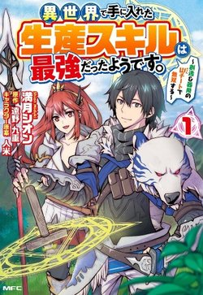

Kousaka Kou, 29 tuổi nhân viên của công ty, được chuyển đến một thế giới khác bằng một cách ngẫu nhiên nào đó và được ban cho một số kỹ năng tiêu chuẩn. Anh ta có quyền lựa chọn trở thành nhà hiền triết, anh hùng hoặc quỷ vương. Anh ta không chọn thứ gì cả và có được một kỹ năng ẩn. Với kỹ năng ẩn của mình, anh ấy bắt đầu cuộc sống của mình như một nhà thám hiểm.